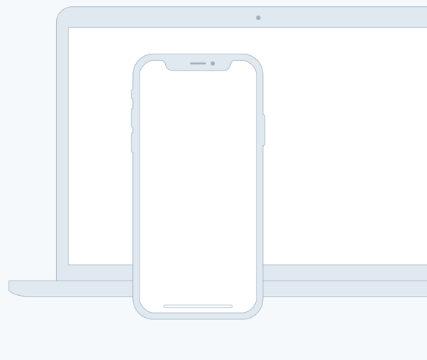

TAGLINE
Source helps creators do more of what they love
A device that enables collaboration will lessen the chance of work having to be completely redone.
A device that enables collaboration will lessen the chance of work having to be completely redone.
A device that enables collaboration will lessen the chance of work having to be completely redone.
In such a test, the user performs realistic tasks by interacting with the paper prototype
First linkThree techniques of paper prototyping used for usability testing are comps, wireframes
Second linkRapid prototyping involves a group of designers who each create a paper prototype
Third linkFunctionality is similarly unimportant, but in this case are closer to the final product
Fourth linkIn the context of information architecture, information is separate from both knowledge and data, and lies nebulously between them.